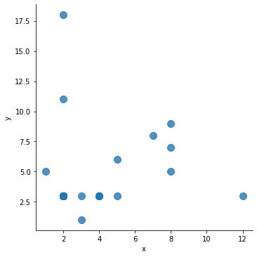
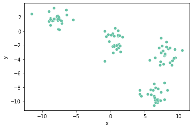
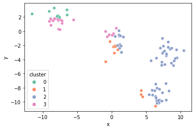
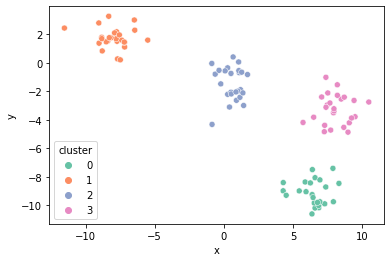

빅데이터 K 평균(K Means) 구현하기
1. 빅 데이터 K 평균(K Means) 구현하기
- 클러스트 중심 또는 평균 기반 클러스터링 k-means
from sklearn.cluster import KMeans
import numpy as np # 연산처리를 용이하게 하기 위해 사용함
import pandas as pd # 데이터 포인트를 만들기 위해 사용함
import seaborn as sb
import matplotlib.pyplot as plt # 데이터 시각화를 위해 사용함
%matplotlib inline
데이터 설정하기
df = pd.DataFrame(columns={'x','y'})
df.loc[0] = [2,3]
df.loc[1] = [2,11]
df.loc[3] = [2,18]
df.loc[4] = [4,3]
df.loc[5] = [3,3]
df.loc[6] = [1,5]
df.loc[7] = [2,3]
df.loc[8] = [2,3]
df.loc[9] = [2,3]
df.loc[10] = [8,5]
df.loc[11] = [3,1]
df.loc[12] = [5,3]
df.loc[13] = [8,9]
df.loc[14] = [5,6]
df.loc[15] = [4,3]
df.loc[16] = [4,3]
df.loc[17] = [2,3]
df.loc[18] = [2,3]
df.loc[19] = [7,8]
df.loc[20] = [8,7]
df.loc[21] = [2,3]
df.loc[22] = [2,3]
df.loc[23] = [4,3]
df.loc[24] = [12,3]
df.loc[25] = [2,3]
df.loc[26] = [2,3]
df.loc[27] = [2,3]
df.loc[28] = [2,3]
df.loc[29] = [2,3]
df.head(30)
| x | y | |
|---|---|---|
| 0 | 2 | 3 |
| 1 | 2 | 11 |
| 3 | 2 | 18 |
| 4 | 4 | 3 |
| 5 | 3 | 3 |
| 6 | 1 | 5 |
| 7 | 2 | 3 |
| 8 | 2 | 3 |
| 9 | 2 | 3 |
| 10 | 8 | 5 |
| 11 | 3 | 1 |
| 12 | 5 | 3 |
| 13 | 8 | 9 |
| 14 | 5 | 6 |
| 15 | 4 | 3 |
| 16 | 4 | 3 |
| 17 | 2 | 3 |
| 18 | 2 | 3 |
| 19 | 7 | 8 |
| 20 | 8 | 7 |
| 21 | 2 | 3 |
| 22 | 2 | 3 |
| 23 | 4 | 3 |
| 24 | 12 | 3 |
| 25 | 2 | 3 |
| 26 | 2 | 3 |
| 27 | 2 | 3 |
| 28 | 2 | 3 |
| 29 | 2 | 3 |
데이터 시각화
# seaborn 라이브러리를 이용
sb.lmplot('x','y',data=df,fit_reg=False, scatter_kws={"s":100})
C:\Users\MyCom\anaconda3\envs\tfgpu\lib\site-packages\seaborn\_decorators.py:43: FutureWarning: Pass the following variables as keyword args: x, y. From version 0.12, the only valid positional argument will be `data`, and passing other arguments without an explicit keyword will result in an error or misinterpretation.
FutureWarning
<seaborn.axisgrid.FacetGrid at 0x28a0897c438>

2. k-means clustering
from sklearn.datasets import make_blobs
import pandas as pd
import numpy as np
import math
import scipy as sp
import seaborn as sns
import matplotlib.pyplot as plt
sns.set_palette("Set2")
Scikit-Learn은 머신러닝을 위한 파이썬 패키지이며, clustering을 할 수 있는 가상의 데이터셋을 만들어주는 함수들을 제공한다. 오늘은 그 중 하나인 make_blobs()를 사용해서 데이터셋을 만들어보자.
x, y = make_blobs(n_samples=100, centers=4, n_features=2, random_state=6)
points = pd.DataFrame(x, y).reset_index(drop=True)
points.columns = ["x", "y"]
points.head()
| x | y | |
|---|---|---|
| 0 | 0.276181 | -2.217047 |
| 1 | 7.927368 | -9.761527 |
| 2 | 8.491428 | -2.549749 |
| 3 | -11.537102 | 2.434883 |
| 4 | 4.292259 | -8.992204 |
Step 1. k값 정하기
k-means clustering이란 이름에서 알 수 있듯이 주어진 데이터셋을 k개의 중심점을 기준으로 하여 그룹짓는 방법이다. 따라서, 중심점을 몇 개로 할 것인지를 미리 정해줘야 한다.
sns.scatterplot(x="x", y="y", data=points, palette="Set2");

위 그래프는 우리가 만든 데이터셋을 scatter plot으로 그려본 것이다. 데이터의 분포를 보니 k값이 4 정도면 적당한 cluster들을 얻을 수 있을 것 같다. 따라서, k=4로 해보자.
Step 2. 중심점(Centroid) 구하기
k값을 정했으니 이제 중심점을 구해야 한다. 중심점이란 말 그대로 각 cluster의 중심 좌표를 말한다. 2차원 데이터를 예로 들면 각 cluster의 중심점은 각 cluster의 x좌표의 평균과 y좌표의 평균이 된다. 단, clustering을 시작할 때는 아직 cluster가 생성되지 않았고 따라서 cluster의 중심점을 구할 수 없기 때문에 전체 데이터 중에서 랜덤한 k개의 데이터를 중심점으로 사용한다.
centroids = points.sample(4, random_state=1)
centroids
| x | y | |
|---|---|---|
| 80 | -8.842286 | 1.786914 |
| 84 | 4.510561 | -9.305970 |
| 33 | 5.883975 | -8.372845 |
| 81 | -8.831594 | 1.690414 |
위와 같이 전체 데이터 중에서 4개를 랜덤하게 골라 첫번째 중심점으로 삼았다.
Step3. 각 중심점으로부터의 거리를 구하여 가까운 중심점의 cluster로 할당하기
각 데이터에 대해서 4개의 중심점과의 거리를 계산한다. 그 후 값을 비교하여 가장 가까운 중심점의 cluster로 해당 데이터를 할당한다.
# 각 데이터에 대하여, 각 중심점과의 유클리드 거리 계산
distance = sp.spatial.distance.cdist(points, centroids, "euclidean")
# 가장 거리가 짧은 중심점의 cluster로 할당
cluster_num = np.argmin(distance, axis=1)
# 결과 확인
result = points.copy()
result["cluster"] = np.array(cluster_num)
result.head()
| x | y | cluster | |
|---|---|---|---|
| 0 | 0.276181 | -2.217047 | 1 |
| 1 | 7.927368 | -9.761527 | 2 |
| 2 | 8.491428 | -2.549749 | 2 |
| 3 | -11.537102 | 2.434883 | 0 |
| 4 | 4.292259 | -8.992204 | 1 |
위와 같이 각 데이터에 대하여 해당하는 cluster 번호를 구했다. 이를 cluster 별로 색을 다르게 해서 scatter plot으로 그려보면 아래와 같다.
sns.scatterplot(x="x", y="y", hue="cluster", data=result, palette="Set2");

Step 4. 변경된 cluster에 대해서 중심점 구하기
각 cluster에 대해서 중심점을 구해보자. 위에서 언급했듯이, 2차원 데이터셋일 때 cluster의 중심점은 x좌표의 평균과 y좌표의 평균이다.
# cluster별로 묶어서 평균 계산
centroids_2 = result.groupby("cluster").mean()
centroids_2
| x | y | |
|---|---|---|
| cluster | ||
| 0 | -8.211603 | 2.420481 |
| 1 | 1.913263 | -5.034035 |
| 2 | 6.180105 | -5.007395 |
| 3 | -5.728498 | 0.878158 |
Scikit-Learn을 이용해보자
Scikit-Learn은 k-means clustering을 보다 편하게 수행할 수 있도록 관련 함수를 제공한다.
from sklearn.cluster import KMeans
# k-means clustering 실행
kmeans = KMeans(n_clusters=4)
kmeans.fit(points)
# 결과 확인
result_by_sklearn = points.copy()
result_by_sklearn["cluster"] = kmeans.labels_
result_by_sklearn.head()
| x | y | cluster | |
|---|---|---|---|
| 0 | 0.276181 | -2.217047 | 2 |
| 1 | 7.927368 | -9.761527 | 0 |
| 2 | 8.491428 | -2.549749 | 3 |
| 3 | -11.537102 | 2.434883 | 1 |
| 4 | 4.292259 | -8.992204 | 0 |
sns.scatterplot(x="x", y="y", hue="cluster", data=result_by_sklearn, palette="Set2");
